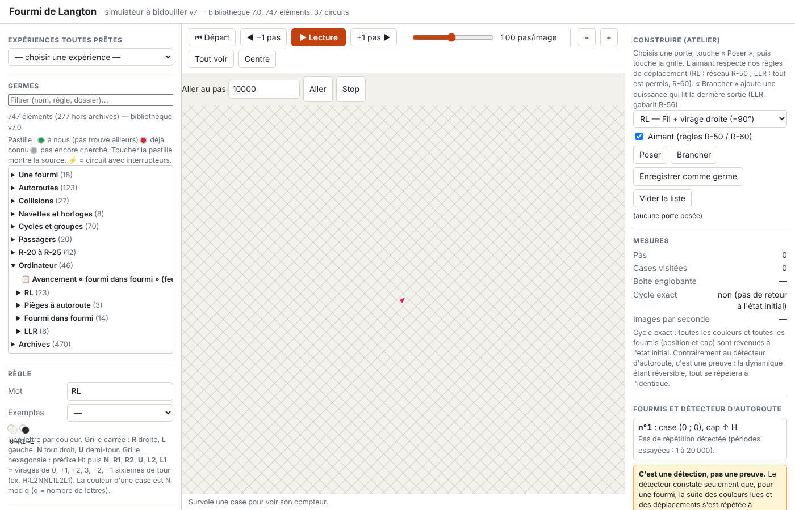
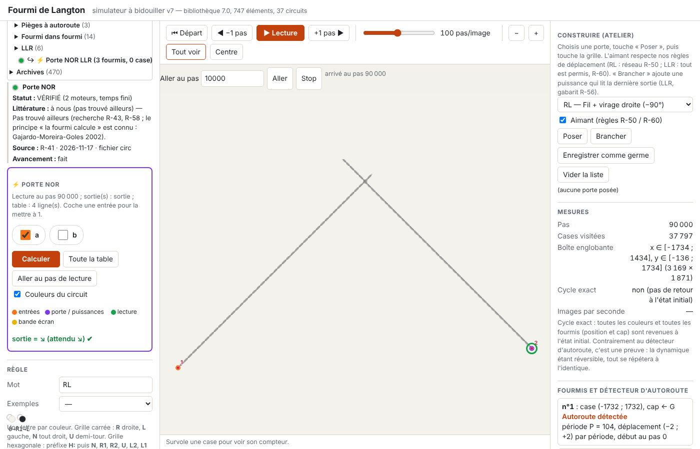
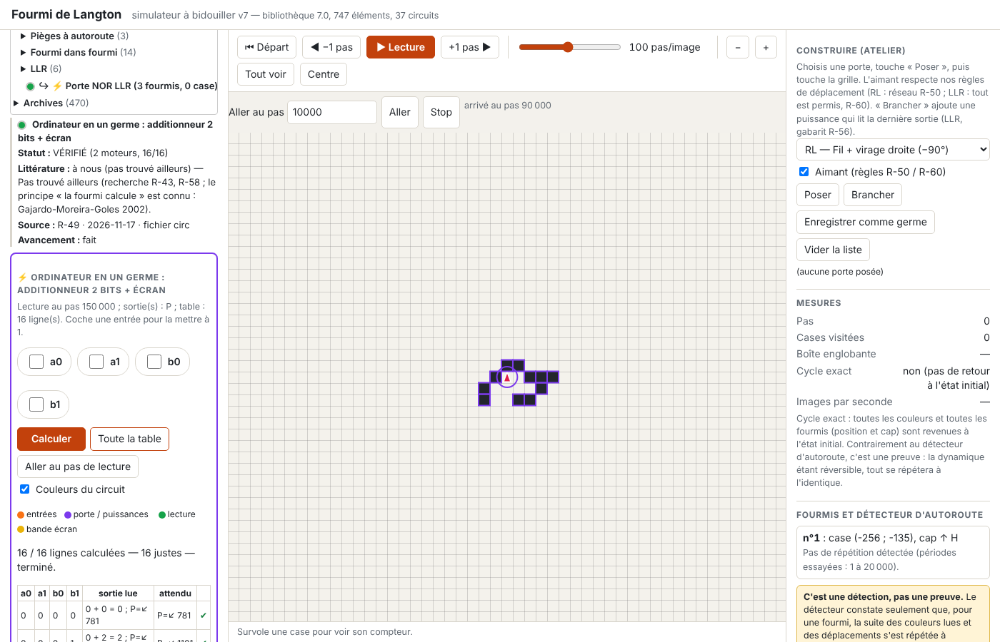
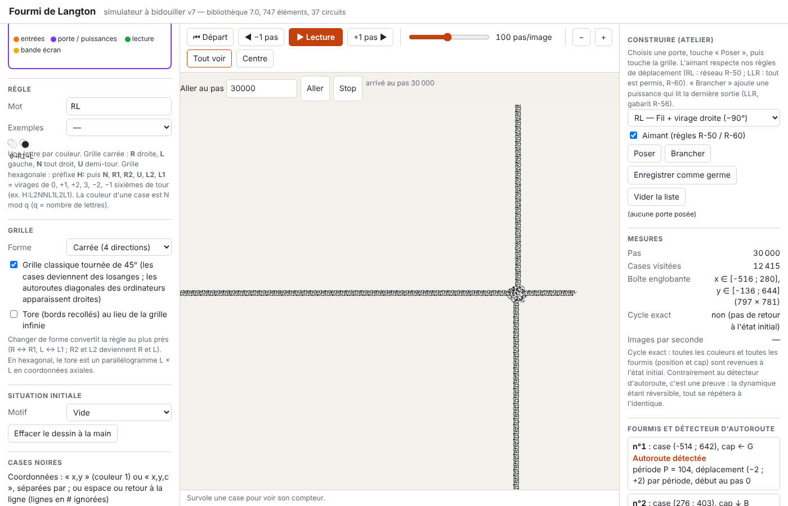
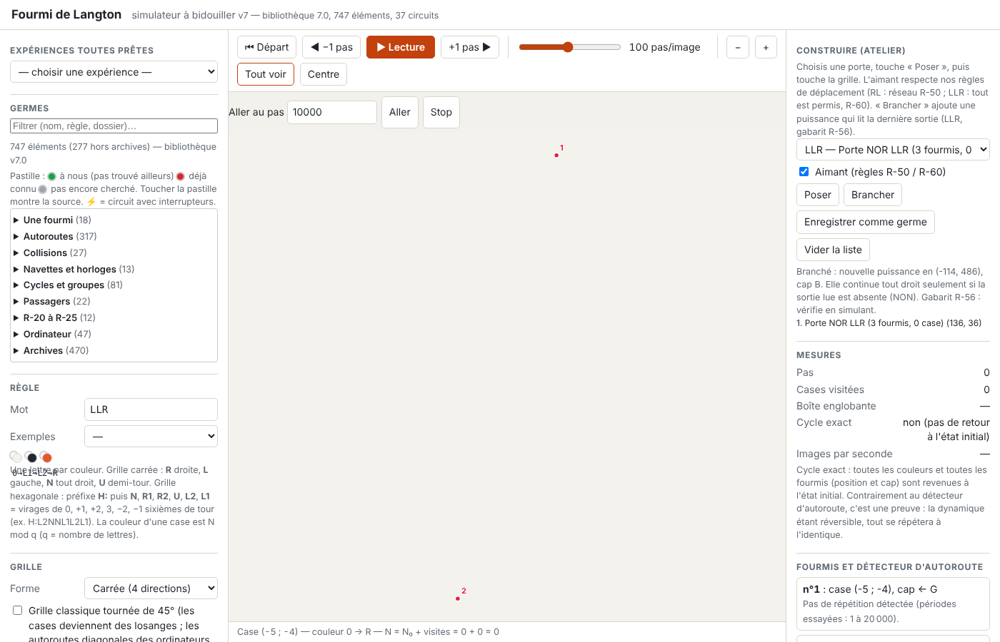
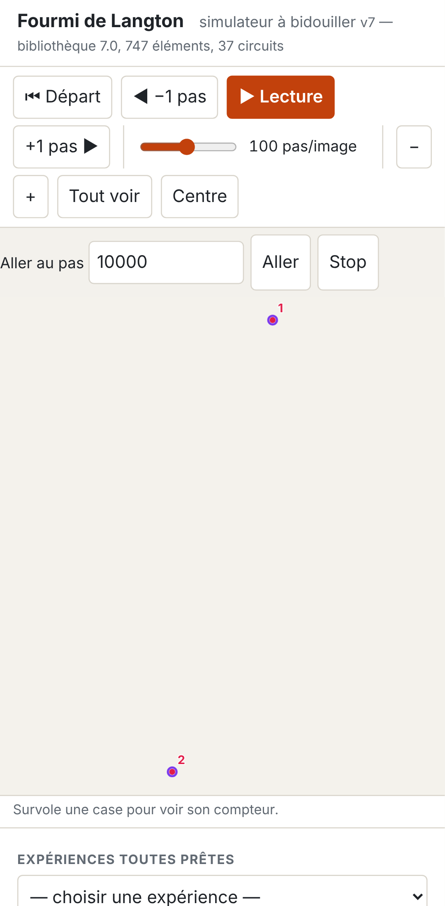

Ouvre index.html (ou le lien GitHub Pages). Marche sur ordinateur et sur téléphone.
Colonne de gauche, « Germes » : les dossiers se déplient (Une fourmi, Autoroutes, Collisions, Navettes et horloges, Cycles et groupes, Passagers, R-20 à R-25, Ordinateur, Archives). Le champ « Filtrer » cherche dans les noms, les autres noms, les règles et les R-xx. Chaque germe a une pastille : à nous (pas trouvé ailleurs), déjà connu (la source s'affiche), pas encore cherché. Toucher la pastille montre la source. La fiche sous l'arbre donne le statut (VÉRIFIÉ, OBSERVÉ…), la source et l'avancement. ⚡ = circuit avec interrupteurs. ↪ = le même germe, rangé aussi dans un autre dossier. Rien n'a été effacé : les doublons et les germes détaillés sont dans « Archives ».
Choisis un germe ⚡ (dossier Ordinateur). Coche les interrupteurs pour mettre une entrée à 1 : leurs fourmis et cases s'ajoutent. Calculer simule jusqu'au pas de lecture et affiche la sortie (direction ↙ ↘ ↗ ↖ et voie) avec ✔ ou ✘ ; pour les additionneurs, le résultat en clair (« 3 + 2 = 5 »). Toute la table teste toutes les entrées. Couleurs : orange = entrées, violet = porte et puissances, vert = lecture, jaune = bande écran.
Glisser pour déplacer ; molette ou deux doigts pour zoomer. « Aller au pas » saute directement à un pas (240 000 pas en quelques secondes). Grille : tournée de 45° pour voir droites les autoroutes diagonales.
Colonne de droite, « Construire » : choisis une porte, Poser, puis touche la grille. L'aimant respecte nos règles (RL : réseau R-50 ; LLR : tout est permis, R-60) et un avertissement s'affiche si un placement casse une règle. Brancher (LLR) ajoute une puissance qui lit la dernière sortie. Enregistrer comme germe l'ajoute à « Mes germes » (jamais à la place d'un autre) et le télécharge.






bibliotheque.json = toutes les données (germes, dossiers, circuits, avancement, historique des versions), séparées du code.
On la reconstruit avec python3 outils/construire_bibliotheque.py : elle est fusionnée, jamais écrasée.
Tests : node test.js (44 tests v6), node test_v7.js (bibliothèque), node test_circuits.js (37 circuits).